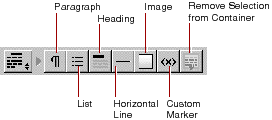

PATH
WebObjects 4.0 Documentation >
WebObjects Tools and Techniques
 Table of Contents
Table of Contents  Previous Section
Previous Section
Structure Elements
By default, the switchable toolbar displays the Structure elements.

The following sections describe the elements you can create with these buttons.
Paragraphs
Click to create a new paragraph. If there is a text selection, the entire selection becomes a paragraph.
You can use the Inspector to set the paragraph to one of the following tags:
Lists
Click to create a new list. If there is a selection, each line in the selection becomes a list item (<LI>). By default the list is an unordered (bulleted) list (<UL>). You can use the Inspector to change the list to an ordered list (<OL>). You can also change the way in which lists appear; for example, displaying an ordered list in Roman numerals (on browsers that support this feature).
When typing in a list:
Headings
Click to create a heading. By default, an <H3> element is created. You can use the Inspector to change the level of the heading to between <H1> and <H6>.
Horizontal Rule
Click to create horizontal rule (<HR>) element. You can use the Inspector to vary its height and width, and whether it is displayed in as a flat or shaded line.
Images
Click to add a static image (<IMG>). A Select Image panel appears, allowing you to select an image file to display at the insertion point. The Inspector allows you to change the image's properties, including its size, file path, and whether it uses an absolute or relative reference.
With static images, you must specify a known file path. You can also create a dynamic image, which refers to an image file that lives in your project or in a framework. See "Dynamic Images" for more information.
To set an image for the page background, see "Setting Page Attributes".
Table of Contents  Next Section
Next Section